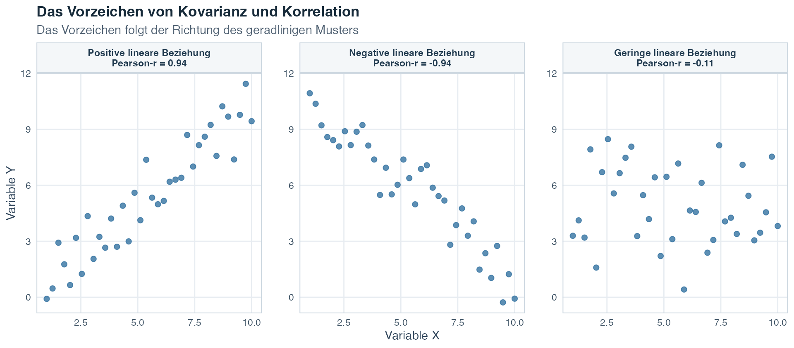
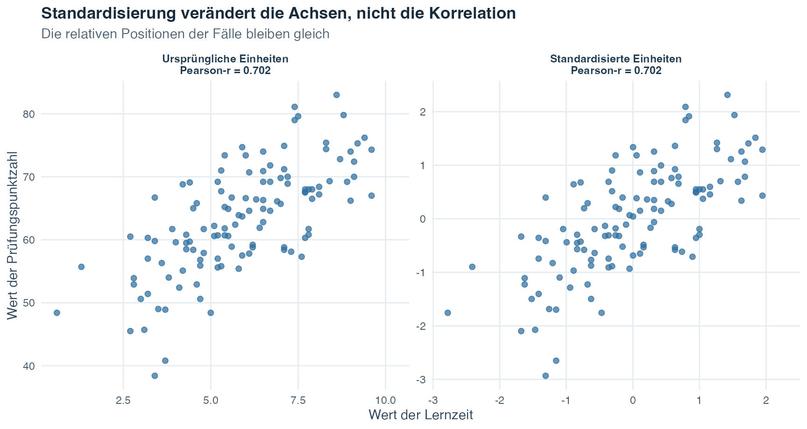
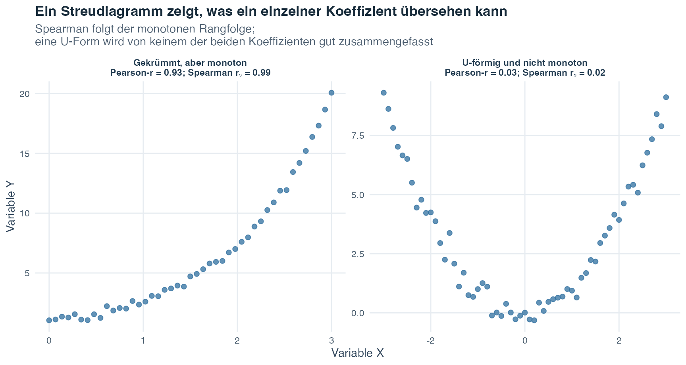
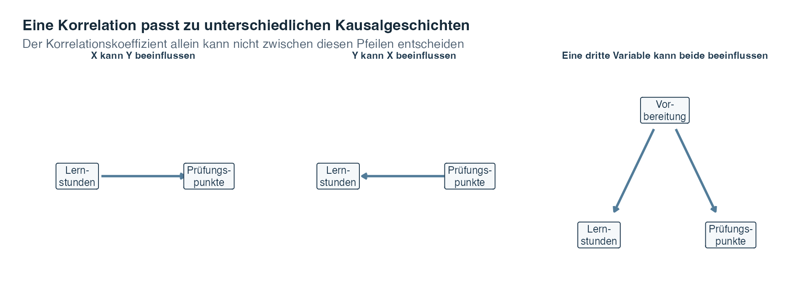

Übungsblatt
Wähle PDF zum Drucken oder Word zum Bearbeiten.
Einführung in die Statistik · Thema 4
Thema 1 hat jeweils eine Variable beschrieben, und in Thema 3 haben wir Stichprobenergebnisse verwendet, um sorgfältige Fragen über eine Grundgesamtheit zu stellen. Nun bringen wir zwei quantitative Variablen in dasselbe Bild. Statt nur zu fragen, wie die Lernzeit oder die Prüfungswerte aussehen, fragen wir, ob die beiden Messungen ein Muster bilden, wenn sie für dieselben Fälle erfasst werden.
Stell dir vor, du trägst für eine Person die wöchentliche Lernzeit und den Prüfungswert als einen Punkt ein und wiederholst dies für jede weitere Person. Steigen die Punkte tendenziell gemeinsam an, fallen sie gemeinsam ab oder bilden sie kein klares geradliniges Muster? Könnte ein einzelner ungewöhnlicher Punkt den Eindruck verändern? Solche Fragen sind wichtig, weil viele Forschungsfragen zunächst untersuchen, ob zwei gemessene Grössen gemeinsam variieren, bevor sie zu Vorhersagen oder komplexeren Modellen übergehen.
Wenn höhere Werte einer Variablen tendenziell gemeinsam mit höheren oder niedrigeren Werten einer anderen Variablen auftreten, zeigen die Variablen einen Zusammenhang. Ein Zusammenhang ist ein Muster gemeinsamer Variation. Er sagt noch nicht, weshalb dieses Muster besteht. Eine Drittvariable, die Wirkungsrichtung oder die Art der Messung können weiterhin von Bedeutung sein.
Der Ausgangspunkt ist ein Streudiagramm, in dem jeder Punkt einen Fall darstellt. Die horizontale Position des Punktes zeigt den Wert dieses Falls auf einer Variablen, seine vertikale Position den Wert auf der anderen Variablen. Da beide Koordinaten zum selben Fall gehören, sind die Beobachtungen gepaart.
Dieses Thema entwickelt zwei numerische Zusammenfassungen eines Streudiagramms. Die Kovarianz erfasst die Richtung, in der zwei quantitative Variablen gemeinsam variieren. Die Korrelation standardisiert diese gemeinsame Variation, damit ihre Richtung und lineare Stärke über unterschiedliche Masseinheiten hinweg verglichen werden können. Das Ziel besteht nicht darin, die Grafik durch einen Koeffizienten zu ersetzen. Wir lernen vielmehr, wie das Bild und die Zahl gemeinsam eine sorgfältige Beschreibung stützen.
Leitfrage: Wie können wir das Muster beschreiben, wenn sich zwei Grössen gemeinsam verändern, ohne Zusammenhang und Kausalität zu verwechseln?
Ein Koeffizient verdichtet ein ganzes Streudiagramm zu einer einzigen Zahl. Betrachte immer zuerst die dargestellten Paare, denn eine Zahl kann eine Kurve, einen engen beobachteten Bereich, getrennte Gruppen oder einen ungewöhnlichen Punkt verbergen.
Nach Abschluss dieses Themas solltest du:
Die Varianz beginnt mit einer Variablen. Für jeden Wert \(x_i\) misst sie die Abweichung \(x_i-\bar{x}\) vom Stichprobenmittelwert und quadriert diese Abweichung. Die Kovarianz erweitert dieselbe Idee auf zwei Variablen. Für jeden gepaarten Fall \(i\) multipliziert sie die Abweichung auf \(X\) mit der Abweichung auf \(Y\):
\[ s_{xy}=\frac{1}{n-1}\sum_{i=1}^{n}(x_i-\bar{x})(y_i-\bar{y}). \]
Lies die Formel schrittweise:
Das Vorzeichen jedes Kreuzprodukts hat eine unmittelbare Bedeutung. Ein Fall, der über beiden Mittelwerten liegt, hat zwei positive Abweichungen, sodass ihr Produkt positiv ist. Ein Fall unter beiden Mittelwerten hat zwei negative Abweichungen, deren Produkt ebenfalls positiv ist. Liegt ein Fall über einem Mittelwert und unter dem anderen, haben die Abweichungen entgegengesetzte Vorzeichen und ihr Produkt ist negativ.
Die folgende neu erstellte Berechnung mit fünf Fällen macht jeden Beitrag sichtbar. Beide Stichprobenmittelwerte betragen 3.
| Fall | x | y | x - Mittelwert(x) | y - Mittelwert(y) | Kreuzprodukt |
|---|---|---|---|---|---|
| 1 | 1 | 2 | -2 | -1 | 2 |
| 2 | 2 | 3 | -1 | 0 | 0 |
| 3 | 3 | 1 | 0 | -2 | 0 |
| 4 | 4 | 5 | 1 | 2 | 2 |
| 5 | 5 | 4 | 2 | 1 | 2 |
| Summe | 15 | 15 | 0 | 0 | 6 |
Die Kreuzprodukte ergeben in der Summe 6. Bei \(n=5\) beträgt die Stichprobenkovarianz
\[ s_{xy}=\frac{6}{5-1}=1.50. \]
Das positive Ergebnis sagt uns, dass in diesem kleinen Datensatz grössere \(x\)-Werte tendenziell gemeinsam mit grösseren \(y\)-Werten auftreten. Der Wert 1.50 besitzt noch keine von Einheiten unabhängige Bedeutung und darf daher nicht als allgemeingültiges Mass der Stärke gelesen werden.
Die Tabelle zeigt die Rechnung Zeile für Zeile. Die nächste Abbildung macht geometrisch sichtbar, wie die Vorzeichen dieser Kreuzprodukte entstehen.
![Ein Streudiagramm mit fünf Fällen wird durch gestrichelte Linien bei x quer gleich 3 und y quer gleich 3 geteilt. Oben rechts und unten links entstehen positive Kovarianzbeiträge, weil beide Werte auf derselben Seite ihrer Mittelwerte liegen. In den beiden anderen Bereichen wären die Beiträge negativ, obwohl dort kein berechneter Fall liegt. Eine Tabelle zeigt für jeden Fall beide vorzeichenbehafteten Abweichungen und den Beitrag. Fall 5 wird vom Schnittpunkt der Mittelwertlinien zwei Einheiten nach rechts und eine Einheit nach oben verfolgt und liefert den Beitrag positive zwei.](t04_cov-corr_files/figure-html/fig-covariance-geometry-1.png)
Die gestrichelte vertikale Linie markiert \(\bar{x}=3\), die horizontale \(\bar{y}=3\). Lies jeden Bereich in Worten. Oben rechts und unten links liegen beide Werte auf derselben Seite ihrer Mittelwerte, weshalb der Fall positiv beiträgt. In den beiden anderen Bereichen liegen die Werte auf entgegengesetzten Seiten und der Fall würde negativ beitragen. In diesem Datensatz liegt kein Punkt in einem negativen Bereich. Die Schattierung zeigt dennoch, woher ein negativer Beitrag käme.
Fall 5 zeigt die Rechnung. Beginne am Schnittpunkt der Mittelwertlinien. Gehe 2 Einheiten nach rechts zu \(x_5=5\), sodass \(x_5-\bar{x}=+2\). Gehe danach 1 Einheit nach oben zu \(y_5=4\), sodass \(y_5-\bar{y}=+1\). Das Produkt der beiden vorzeichenbehafteten Abweichungen ist \((+2)(+1)=+2\). Die Tabelle zeigt dieselben drei Grössen für jeden Fall. Die Fälle 2 und 3 tragen null bei, weil jeweils ein Wert genau seinem Mittelwert entspricht und damit eine Abweichung null ist.
Die Hintergrundbereiche bestimmen nur, ob ein Beitrag positiv oder negativ ist. Die Abstände von den Mittelwertlinien bestimmen seinen Betrag: Weiter entfernte Punkte können ein Kreuzprodukt mit grösserem Betrag liefern. Die Kovarianz addiert die fünf Beiträge, \(2+0+0+2+2=6\), und teilt danach durch \(n-1\). In anderen Datensätzen können sich positive und negative Beiträge gegenseitig ausgleichen. Die Abbildung beschreibt gemeinsame Positionen relativ zu den Mittelwerten und macht keine kausale Aussage.

Lies jedes umrahmte Feld als eigenes Streudiagramm. Seine sichtbare y-Achse stellt den gleichen vertikalen Bezug erneut bereit, sodass du die Achse des ersten Feldes nicht gedanklich über die gesamte Reihe weiterführen musst. Im ersten Feld liegen die meisten Fälle über beiden oder unter beiden Mittelwerten, weshalb positive Produkte überwiegen. Im zweiten Feld liegen viele Fälle über einem und unter dem anderen Mittelwert, weshalb negative Produkte überwiegen. Im dritten Feld gleichen sich positive und negative Produkte beinahe aus, sodass nur ein geringer linearer Zusammenhang bleibt. Die wiederholten Achsen trennen die drei Muster, während Variablen und Skalen in allen Feldern gleich bleiben.
Die Kovarianz hat zwei wichtige Eigenschaften. Erstens ist sie symmetrisch: \(s_{xy}=s_{yx}\). Die Reihenfolge, in der die Variablen geschrieben werden, ändert das Ergebnis nicht. Zweitens hängt ihre Grösse von den Einheiten beider Variablen ab. Werden Stunden in Minuten umgerechnet, wird die Kovarianz mit 60 multipliziert, obwohl sich das Punktmuster inhaltlich nicht verändert hat. Diese Einheitenabhängigkeit motiviert die Korrelation.
Der Pearson-Korrelationskoeffizient standardisiert die Kovarianz durch die Stichprobenstandardabweichungen beider Variablen:
\[ r_{xy}=\frac{s_{xy}}{s_xs_y}. \]
Er wird auch Bravais-Pearson-Korrelation oder Produkt-Moment-Korrelation genannt. Auf dieser Website schreiben wir meistens einfach Pearson-r.
Der Nenner \(s_xs_y\) entfernt die ursprünglichen Einheiten. Pearson-r ist deshalb einheitenlos und liegt immer zwischen \(-1\) und \(+1\):
Das Vorzeichen gibt die Richtung an. Der Betrag \(|r|\), also der Abstand von \(r\) zu null ohne sein Vorzeichen, beschreibt, wie eng die Punkte einem geradlinigen Muster folgen. Beträge näher bei 1 zeigen ein engeres lineares Muster. Beträge näher bei 0 zeigen ein schwächeres lineares Muster.
Verwandle dieses Kontinuum nicht ohne Kontext in automatische Bezeichnungen wie “schwach”, “mittel” oder “stark”. Die praktische Bedeutung einer Korrelation hängt davon ab, was gemessen wurde, wie gut die Messungen sind, welche Folgen eine Entscheidung hat und welche wissenschaftliche Frage gestellt wird. Ein numerisch kleiner Zusammenhang kann in einem Kontext wichtig sein, während ein grösserer in einem anderen unbedeutend sein kann.
Pearson-r ist wie die Kovarianz symmetrisch: \(r_{xy}=r_{yx}\). Der Koeffizient beschreibt einen Zusammenhang und keine Richtung von Ergebnis und Prädiktor. Eine Verschiebung des Nullpunkts einer Skala oder die Umrechnung in eine andere positive Einheit lässt \(r\) unverändert. Wird eine Skala bewusst mit einem negativen Multiplikator umgekehrt, kehrt sich das Vorzeichen von \(r\) um, weil sich die Bedeutung hoher und niedriger Werte umgekehrt hat.
Thema 1 hat den z-Wert eingeführt. Für einen Stichprobenwert drückt \(z_{xi}=(x_i-\bar{x})/s_x\) seine Position in Standardabweichungseinheiten aus. Der entsprechende Wert für \(Y\) ist \(z_{yi}=(y_i-\bar{y})/s_y\).
Die Pearson-Korrelation kann als Kovarianz dieser standardisierten Werte geschrieben werden:
\[ r_{xy}=\frac{1}{n-1}\sum_{i=1}^{n}z_{xi}z_{yi}. \]
Dieser Zusammenhang gilt exakt, weil jede standardisierte Variable den Stichprobenmittelwert 0 und die Stichprobenstandardabweichung 1 besitzt. Die Standardisierung verändert die Einheiten der Achsen, bewahrt jedoch die relative Position jedes Falls und das lineare Punktmuster.

Das linke und das rechte Feld enthalten dieselben Fälle. Nur die Beschriftungen der Achsen verändern sich. Deshalb kann die Korrelation im Gegensatz zur Kovarianz die lineare Stärke von Variablen vergleichen, die in unterschiedlichen Einheiten gemessen wurden.
Eine alternative Berechnung aus Rohsummen. Ein direkter Rechenweg von Hand ist hilfreich, wenn eine Aufgabe die Summen von \(X\) und \(Y\), ihrer Quadrate und ihrer Kreuzprodukte vorgibt. Wir halten den Ausdruck übersichtlich, indem wir ihn schrittweise aufbauen. Berechne zuerst den gemeinsamen Teil:
\[ A=n\sum x_i y_i-(\sum x_i)(\sum y_i). \]
Berechne danach für jede Variable einen eigenen Streuungsteil:
\[ B_X=n\sum x_i^2-(\sum x_i)^2, \qquad B_Y=n\sum y_i^2-(\sum y_i)^2. \]
Verbinde sie zum Schluss:
\[ r=\frac{A}{\sqrt{B_XB_Y}}. \]
\(A\) erfasst die gemeinsame Variation. \(B_X\) und \(B_Y\) skalieren diese gemeinsame Variation anhand der getrennten Variation der beiden Variablen. Für die obige Tabelle mit fünf Fällen gilt \(n=5\), \(\sum x=15\), \(\sum y=15\), \(\sum x^2=55\), \(\sum y^2=55\) und \(\sum xy=51\). Daher gilt
\[ A=5(51)-(15)(15)=30, \]
\[ B_X=B_Y=5(55)-15^2=50, \]
und
\[ r=\frac{30}{\sqrt{50\times50}}=0.60. \]
Dieser mehrstufige Rechenweg ist eine algebraisch umgestellte Form derselben Pearson-Korrelationsrechnung und führt zum selben Koeffizienten. Konzentriere dich beim ersten Lesen darauf, was der gemeinsame Teil und die getrennten Streuungsteile bewirken. Die Arithmetik wird leichter, sobald diese Struktur vertraut ist.
An dieser Stelle interpretieren wir Pearson-r direkt. Die formale Interpretation als Anteil der Variation folgt mit dem Regressionsmodell in Thema 5. Deshalb behandeln wir \(r^2\) hier nicht als Prozentsatz, der von einer Variablen verursacht wird. Das Quadrieren einer Korrelation macht aus einem beobachteten Zusammenhang niemals eine kausale Erklärung.
Pearson-r ist dafür gedacht, einen linearen Zusammenhang zusammenzufassen, also ein Muster, das sich angemessen durch eine gerade Linie darstellen lässt. Die Berechnung selbst kann für viele Datensätze eine Zahl liefern. Diese Zahl ist aber nur dann eine nützliche Zusammenfassung, wenn die dargestellten Paare eine solche Interpretation stützen.
Prüfe vor der Angabe von Pearson-r fünf Merkmale:
Diese Prüfungen betreffen die Interpretation und sind keine kosmetische Darstellung. Einen unbequemen Punkt nur zu entfernen, um \(r\) zu vergrössern, ist nicht gerechtfertigt. Untersuche, ob der Wert ein Fehler, ein gültiger ungewöhnlicher Fall oder ein Hinweis darauf ist, dass eine einzige lineare Zusammenfassung nicht ausreicht. Im simulierten Beispiel weiter unten werden die Wirkungen eines Ausreissers und einer Bereichseinschränkung sichtbar.
Zwei Variablen sind unabhängig, wenn der Wert der einen keine Information über die Verteilung der anderen liefert. Wenn die erforderlichen Mittelwerte und Varianzen existieren, folgt aus Unabhängigkeit eine Kovarianz von null und damit eine Pearson-Korrelation von null. Die umgekehrte Aussage ist falsch.
Pearson-r von 0 bedeutet nur, dass sich die positiven und negativen Beiträge zum linearen Muster ausgleichen. Ein U-förmiger Zusammenhang kann vollkommen systematisch sein, während seine Pearson-Korrelation nahe bei null liegt. Betrachte immer das Streudiagramm, bevor du \(r=0\) in “kein Zusammenhang” übersetzt.
Diese Einschränkung führt auf natürliche Weise zu einem zweiten Koeffizienten. Pearson fasst ein geradliniges Muster zusammen. Spearman fasst zusammen, ob sich die Rangfolge der einen Variablen tendenziell beständig mit der Rangfolge der anderen bewegt.
Die Spearman-Rangkorrelation, geschrieben als \(r_s\), ist die Pearson-Korrelation von Rängen statt der ursprünglichen Werte. Ein Rang erfasst die geordnete Position eines Werts. Der kleinste Wert erhält Rang 1, der nächste Rang 2 und so weiter.
Spearman-\(r_s\) beschreibt einen monotonen Zusammenhang. Monoton bedeutet, dass sich \(Y\) tendenziell in eine gleichbleibende Richtung bewegt, wenn \(X\) zunimmt:
Wenn mehrere Fälle denselben Wert haben, bilden sie eine Rangbindung. Jeder gebundene Fall erhält den Mittelwert der Ränge, die diese Fälle belegt hätten. Sind beispielsweise zwei Werte auf den Positionen 2 und 3 gebunden, erhalten beide Rang 2.5. Software verwendet diese gemittelten Ränge bei der Berechnung der allgemeinen Spearman-Korrelation.
Wenn keine Rangbindungen vorliegen, verwenden wir eine praktische Kurzformel:
\[ r_s = 1- \frac{6\sum_{i=1}^{n}d_i^2}{n(n^2-1)}, \]
wobei \(d_i=\operatorname{Rang}(x_i)-\operatorname{Rang}(y_i)\) die Differenz zwischen den beiden Rängen von Fall \(i\) ist. Kleine Rangdifferenzen halten \(r_s\) nahe bei \(+1\), während grosse Abweichungen zwischen den beiden Rangfolgen den Wert verringern. Bei Rangbindungen verwendest du die Pearson-Korrelation der gemittelten Ränge, statt diese Kurzformel als exakt zu behandeln.

Das linke Feld steigt durchgehend an, ist aber gekrümmt. Seine Ränge bleiben beinahe perfekt geordnet, sodass Spearman nahe bei 1 liegt. Pearson liegt tiefer, weil das Muster nicht gerade ist. Das rechte Feld fällt zuerst und steigt dann an. Diese U-Form ist nicht monoton, weshalb keiner der beiden Koeffizienten das Muster gut zusammenfasst, obwohl die Variablen eindeutig zusammenhängen.
| Frage | Pearson-\(r\) | Spearman-\(r_s\) |
|---|---|---|
| Welches Muster wird zusammengefasst? | Linearer Zusammenhang | Monotoner Zusammenhang |
| Welche Werte werden korreliert? | Ursprüngliche quantitative Werte | Getrennte Ränge der beiden Variablen |
| Hier verwendetes Mindestskalenniveau | Metrisch | Ordinal |
| Empfindlichkeit gegenüber Ausreissern | Kann sehr empfindlich sein | Meist weniger empfindlich, weil Ränge den numerischen Abstand begrenzen |
| Beweist null Unabhängigkeit? | Nein | Nein |
Lies die Tabelle spaltenweise, statt einen allgemein “besseren” Koeffizienten zu wählen. Pearson bewahrt die ursprünglichen quantitativen Abstände und fragt, wie eng die Fälle einer Geraden folgen. Spearman ersetzt Werte durch Ränge und fragt, ob sich ihre Reihenfolge beständig nach oben oder unten bewegt. Die letzte Zeile ist bewusst gleich: Weder ein Pearson-Koeffizient von null noch ein Spearman-Koeffizient von null beweist, dass die Variablen unabhängig sind.
Spearman ist keine automatische Reparatur für jedes schwierige Streudiagramm. Der Koeffizient übersieht weiterhin nichtmonotone Muster, kann von ungewöhnlichen Rangkonfigurationen beeinflusst werden und belegt keine Kausalität. Wähle ihn, weil Skalenniveau und Muster eine rangbasierte monotone Zusammenfassung rechtfertigen, nicht weil er eine bevorzugte Zahl erzeugt.
Der Stichprobenkoeffizient \(r\) beschreibt die beobachteten gepaarten Fälle. Der griechische Buchstabe \(\rho\) (Rho) bezeichnet die Pearson-Korrelation in der Grundgesamtheit. Der hier verwendete Test fragt, ob eine beobachtete Stichprobenkorrelation mit der Nullhypothese
\[ H_0:\rho=0 \]
vereinbar ist. Diese Hypothese bedeutet, dass in der Grundgesamtheit keine lineare Pearson-Korrelation besteht. Bei einer zweiseitigen Frage lautet die Alternative \(H_1:\rho\neq0\). Die Teststatistik ist
\[ t=\frac{r\sqrt{n-2}}{\sqrt{1-r^2}}, \qquad df=n-2. \]
Hier ist \(n\) die Anzahl gepaarter Fälle, und \(df\) bezeichnet die Freiheitsgrade, also die Grösse der Referenzverteilung, mit der der p-Wert bestimmt wird. Thema 3 hat den p-Wert als Wahrscheinlichkeit eingeführt, unter dem Nullmodell ein Ergebnis zu erhalten, das mindestens so unvereinbar mit \(H_0\) ist wie das beobachtete Ergebnis. Die Richtung der Alternativhypothese bestimmt, ob eine einseitige oder zweiseitige Referenzfläche verwendet wird.
Der Test ersetzt das Streudiagramm nicht. Er ist für die lineare Pearson-Frage gedacht und beruht auf den Stichproben- und Messbedingungen hinter dieser Frage. Gepaarte Fälle müssen von anderen gepaarten Fällen unabhängig sein, die Beobachtungen müssen eine lineare Zusammenfassung stützen, und einflussreiche Ausreisser oder Designprobleme können eine einfache Interpretation ungültig machen.
Besonders wichtig ist: Statistische Signifikanz ist nicht die Stärke eines Zusammenhangs. Bei einer sehr grossen Stichprobe kann ein kleines \(r\) einen kleinen p-Wert erzeugen. Bei einer sehr kleinen Stichprobe kann selbst ein grosses beobachtetes \(r\) unsicher bleiben. Berichte \(r\), \(n\), die Testrichtung und das Inferenzergebnis getrennt und besprich danach die praktische Bedeutung im Kontext der Studie.
Eine Kausalaussage besagt, dass eine Veränderung einer Variablen eine andere Variable verändern würde. Eine Korrelation allein rechtfertigt diese Aussage nicht, besonders wenn die Daten aus einer Beobachtungsstudie stammen, also aus einer Studie, in der Forschende Variablen messen, ohne die verglichenen Bedingungen zuzuweisen.
Nach der Beobachtung eines Zusammenhangs bleiben zwei Probleme bestehen:

Das erste Feld zeigt die kausale Richtung, an die viele Menschen beim Anblick der Korrelation denken. Das zweite kehrt diesen Pfeil um und ist mit einem symmetrischen Koeffizienten ebenso vereinbar. Das dritte führt die bisherige Vorbereitung als gemeinsame Ursache beider gemessener Variablen ein. Sie kann einen Zusammenhang erzeugen, auch wenn zwischen Lernzeit und Punktzahl kein direkter Pfeil besteht. Das Streudiagramm und \(r\) allein können nicht zwischen diesen Erklärungen auswählen.
Dieselbe Logik gilt auch ausserhalb der Lehrvariablen in der Abbildung. Nehmen wir an, die Gehirnstruktur und eine Alkoholabhängigkeit korrelieren miteinander. Aus dem Zusammenhang allein lässt sich nicht erkennen, ob strukturelle Unterschiede zur Abhängigkeit beigetragen haben, ob die Abhängigkeit zu späteren strukturellen Unterschieden beigetragen hat oder ob beide Prozesse aufgetreten sind. Ein zweites Beispiel betrifft das Vorlesen: Wie häufig Eltern ihren Kindern vorlesen, kann mit dem späteren beruflichen Werdegang der Kinder zusammenhängen. Gleichzeitig kann die Ausbildung der Eltern sowohl mit der Häufigkeit des Vorlesens als auch mit den späteren Bildungschancen des Kindes verbunden sein. Diese Beispiele belegen keine einzelne Kausalgeschichte. Sie zeigen, weshalb vor kausalen Formulierungen eine plausible umgekehrte Richtung oder eine gemeinsame Ursache berücksichtigt werden muss.
Ein Längsschnittdesign misst Variablen zu mehreren Zeitpunkten und kann helfen festzustellen, welche Veränderung zuerst erfolgte. Die zeitliche Reihenfolge beseitigt jedoch nicht jede alternative Erklärung. Ein randomisiertes kontrolliertes Experiment weist Bedingungen per Zufall zu und hält die übrigen Abläufe so konstant wie möglich. Wenn dies machbar und ethisch vertretbar ist, bietet die Zufallszuweisung eine stärkere Grundlage für eine kausale Schlussfolgerung als eine beobachtete Korrelation.
Gehe jedes Mal in derselben Reihenfolge vor:
Der Ablauf führt von einem sichtbaren Muster zu einer numerischen Zusammenfassung und erst danach zur Inferenz. Diese Reihenfolge erschwert es, dass ein attraktiver Koeffizient ein Problem in den Daten verbirgt.
Nun wenden wir den vollständigen Ablauf auf einen reproduzierbaren Lehrdatensatz an. Reproduzierbar bedeutet, dass dieselben Anweisungen und derselbe feste Startwert bei jedem Aufbau der Seite dieselben Werte erneut erzeugen, obwohl das Rezept zufallsähnliche Variation nachahmt. Thema 1 hat Simulationen und feste Startwerte eingeführt. Hier wurden keine realen Studierenden gemessen.
Eine ansteigende Punktwolke kann überzeugend wirken. Eine verantwortungsvolle Analyse fragt jedoch, was das Muster tatsächlich stützt, bevor sie es in einem einzigen Koeffizienten verdichtet. In dieser konstruierten Kohorte, also den 120 künstlichen Fällen, die gemeinsam untersucht werden, lautet unsere zentrale Frage:
Wie hängen die wöchentlichen Lernstunden mit den Prüfungspunktzahlen zusammen?
Drei kleinere Fragen leiten die Antwort. Zeigt das Streudiagramm ein annähernd geradliniges Muster und nicht eine Kurve oder getrennte Gruppen? Erzählen der Pearson- und der Spearman-Koeffizient für diese Daten eine ähnliche Geschichte? Wie stark kann ein ungewöhnlicher Punkt oder ein eingeschränkter Lernzeitbereich die numerische Zusammenfassung verändern? Dies sind deskriptive und inferenzstatistische Fragen zu einem Zusammenhang. Sie fragen nicht, ob eine längere Lernzeit bei einer realen Person eine bestimmte Veränderung der Punktzahl verursachen würde.
Das Simulationsrezept erzeugt drei quantitative Variablen:
Dieses Rezept enthält die bisherige Vorbereitung bewusst als dritte Variable. So wird sichtbar, weshalb eine Korrelation zwischen Lernzeit und Prüfungspunktzahl für sich allein keine kausale Wirkung isolieren kann.
| Variable | Bedeutung in der Simulation | Rolle in diesem Beispiel |
|---|---|---|
participant_id |
Anonyme Zeilenbezeichnung | Identifiziert gepaarte Werte; keine quantitative Grösse zum Mitteln |
prior_preparation |
Konstruierte Vorbereitungspunktzahl von 0 bis 100 | Bekannte dritte Variable im Datenerzeugungsrezept |
study_hours |
Konstruierte wöchentliche Lernzeit | Erste Variable der Korrelation |
exam_score |
Konstruiertes Prüfungsergebnis von 0 bis 100 | Zweite Variable der Korrelation |
Die Tabelle trennt die Verwaltung der Zeilen von der Analyse. participant_id macht jede Zeile identifizierbar, besitzt aber keine quantitative Interpretation. Die nächsten drei Spalten sind numerisch, spielen jedoch unterschiedliche Rollen: Die bisherige Vorbereitung ist eine bekannte dritte Variable im Rezept, während Lernstunden und Prüfungspunktzahl das gepaarte Variablenpaar bilden, dessen Kovarianz und Korrelationen wir berechnen. Werden diese Rollen sichtbar gehalten, kann weder eine Identifikationsnummer noch eine erklärende Hintergrundvariable fälschlich als eine der Zielmessungen behandelt werden.
Die Analyse führt von den Zeilen zum Streudiagramm, dann zu Kovarianz, Pearson- und Spearman-Koeffizient, Inferenz und diagnostischen Prüfungen.
Schritt 1: Die gepaarten Zeilen prüfen
In jeder Zeile müssen die drei Messungen eines Falls zusammenbleiben. Würde eine Spalte ohne die anderen sortiert, ginge die Paarung verloren und es entstünde eine bedeutungslose Korrelation. Die interaktive Tabelle enthält alle 120 Zeilen. Verwende das Suchfeld, die Sortierfunktionen und die Seitensteuerung, um die konstruierten Fälle zu untersuchen, ohne die Paarung innerhalb einer Zeile zu verändern.
Die vollständige Kohorte enthält 120 gepaarte Fälle. Die beobachtete Lernzeit reicht von 0.6 bis 9.6 Stunden pro Woche, und die Prüfungspunktzahlen reichen von 38.4 bis 83.0. Dies sind erzeugte Bereiche und keine Schätzungen über reale Studierende.
Nachdem die Paarung geprüft ist, betrachten wir im nächsten Schritt alle Paare gleichzeitig.
Schritt 2: Vor der Berechnung grafisch darstellen
Die Punktwolke steigt von links nach rechts an. Der Zusammenhang ist also positiv. Das Muster ist annähernd geradlinig, obwohl die Punkte nicht auf einer einzigen perfekten Geraden liegen. Die rote Linie dient hier als visuelle Orientierung für die lineare Richtung. Die formale Regressionsgerade wird in Thema 5 entwickelt.
| Grösse | Wert |
|---|---|
| Anzahl gepaarter Fälle | 120 |
| Mittlere wöchentliche Lernzeit | 5.89 |
| SD der wöchentlichen Lernzeit | 1.90 |
| Mittlere Prüfungspunktzahl | 63.33 |
| SD der Prüfungspunktzahl | 8.50 |
| Stichprobenkovarianz | 11.365 |
| Pearson-Korrelation | 0.702 |
| Spearman-Rangkorrelation | 0.706 |
Lies die Zusammenfassung in drei Blöcken. Die Anzahl gepaarter Fälle bestätigt den Stichprobenumfang, den jeder Koeffizient verwendet. Die beiden Mittelwerte und Standardabweichungen beschreiben jede Variable einzeln. Kovarianz, Pearson-r und Spearman-\(r_s\) beschreiben die Variablen danach gemeinsam. Die Kovarianz behält die ursprünglichen Stunden-Punkte-Einheiten, Pearson standardisiert das lineare Muster und Spearman fasst die Rangfolge der Fälle zusammen.
Pearson-\(r=0.702\) beschreibt in dieser konstruierten Kohorte einen deutlichen positiven linearen Zusammenhang. Das Wort “deutlich” bezieht sich auf das sichtbare Punktmuster und diesen Lehrkontext und nicht auf einen allgemeingültigen numerischen Grenzwert.
Schritt 3: Nachvollziehen, wie die Kovarianz entsteht
Ein Kreuzprodukt multipliziert für einen Fall die Abweichung seiner Lernzeit mit der Abweichung seiner Prüfungspunktzahl. Die nächste Tabelle zeigt die ersten acht Kreuzprodukte. Die vollständige Kovarianz verwendet dieselbe Berechnung für alle 120 Fälle.
| Teilnehmenden-ID | Lernstunden | Prüfungspunktzahl | Abweichung der Lernzeit | Abweichung der Punktzahl | Kreuzprodukt |
|---|---|---|---|---|---|
| S001 | 9.0 | 66.2 | 3.11 | 2.87 | 8.92 |
| S002 | 6.0 | 73.4 | 0.11 | 10.07 | 1.06 |
| S003 | 0.6 | 48.4 | -5.30 | -14.93 | 79.04 |
| S004 | 4.3 | 58.5 | -1.59 | -4.83 | 7.70 |
| S005 | 7.1 | 58.4 | 1.21 | -4.93 | -5.94 |
| S006 | 3.4 | 38.4 | -2.49 | -24.93 | 62.19 |
| S007 | 7.7 | 68.0 | 1.81 | 4.67 | 8.43 |
| S008 | 8.1 | 68.4 | 2.20 | 5.07 | 11.18 |
Die beiden mittleren Abweichungsspalten zeigen, wo jeder dargestellte Fall relativ zu den beiden Stichprobenmittelwerten liegt. Die letzte Spalte multipliziert diese Abweichungen. Bei einem positiven Kreuzprodukt liegt der Fall auf derselben Seite beider Mittelwerte, bei einem negativen Kreuzprodukt auf unterschiedlichen Seiten. Die Tabelle zeigt der Lesbarkeit halber nur acht Zeilen. Ihre sichtbaren Kreuzprodukte dürfen deshalb nicht addiert werden, um die vollständige Kovarianz nachzubilden.
Fälle über beiden oder unter beiden Stichprobenmittelwerten liefern positive Produkte. Fälle auf entgegengesetzten Seiten der beiden Mittelwerte liefern negative Produkte. In der gesamten Kohorte überwiegen die positiven Beiträge, woraus sich ergibt:
\[ s_{xy}=11.365\ \text{Stunden-Punkte}. \]
Die Einheit “Stunden-Punkte” erinnert daran, dass die Kovarianz von beiden Messskalen abhängt. Mit der Pearson-Korrelation entfernen wir nun diese Einheiten.
Schritt 4: Die Kovarianz standardisieren
Für die gesamte Kohorte gilt
\[ r=\frac{s_{xy}}{s_xs_y} =\frac{11.365}{(1.905)(8.502)} \approx 0.702. \]
Die Umrechnung der Lernzeit von Stunden in Minuten verändert die Kovarianz, nicht aber die Korrelation:
| Masseinheiten | Kovarianz | Pearson-r |
|---|---|---|
| Lernstunden und Prüfungspunkte | 11.365 | 0.702 |
| Lernminuten und Prüfungspunkte | 681.876 | 0.702 |
Vergleiche die Tabellenzeilen miteinander. Die erste Zeile misst die Lernzeit in Stunden. Die zweite multipliziert jeden Lernzeitwert mit 60 und misst dieselben Fälle deshalb in Minuten. Diese Umrechnung multipliziert die Kovarianz mit 60, weil sich ihre Einheiten verändern. Pearson-r bleibt dagegen fest, weil die Standardisierung diese Einheitenänderung entfernt.
Die Kovarianz in Minuten ist 60-mal so gross wie die Kovarianz in Stunden. Beide Korrelationen entsprechen nach dem Runden 0.702, weil die Fälle ihre relativen Positionen behalten.
Die standardisierte Kovarianz ergibt dasselbe Resultat:
\[ s_{z_xz_y}=0.702=r. \]
Diese numerische Gleichheit ist die im Theorie-Tab entwickelte Verbindung über die Standardisierung.
Schritt 5: Pearson und Spearman vergleichen
Die konstruierten Variablen enthalten gerundete Werte. Einige Fälle weisen deshalb gebundene Lernstunden oder Prüfungspunktzahlen auf. Das Spearman-Verfahren weist diesen Rangbindungen gemittelte Ränge zu und korreliert die Ränge. Es ergibt
\[ r_s=0.706. \]
Pearson-\(r=0.702\) und Spearman-\(r_s=0.706\) liegen hier nahe beieinander. Diese Übereinstimmung passt zum überwiegend monotonen und annähernd linearen Muster im Streudiagramm. Monoton bedeutet, dass sich die Werte tendenziell in eine Richtung bewegen, wenn die andere Variable zunimmt, auch wenn das Muster nicht vollkommen geradlinig ist. Es ist keine Regel, dass beide Koeffizienten in jedem Datensatz übereinstimmen müssen.
Schritt 6: Die Hypothese zur Korrelation in der Grundgesamtheit testen
Das Symbol \(\rho\) (rho) bezeichnet die Pearson-Korrelation in der Grundgesamtheit, die das Inferenzmodell repräsentiert. Nehmen wir an, die Inferenzfrage ist zweiseitig:
\[ H_0:\rho=0 \qquad\text{gegen}\qquad H_1:\rho\neq0. \]
Durch Einsetzen von Stichprobenkorrelation und Stichprobenumfang ergibt sich
\[ t=\frac{0.7017\sqrt{120-2}}{\sqrt{1-0.7017^2}} \approx 10.70, \qquad df=118. \]
Hier bedeutet \(df\) Freiheitsgrade. Sie bestimmen die Form der t-Referenzverteilung. Der zweiseitige p-Wert ist kleiner als 0.001. Unter den Testannahmen ist dieses Ergebnis nur schwer mit einer Pearson-Korrelation von genau null in der Grundgesamtheit vereinbar.
Dieser Satz ist bewusst enger als “Es besteht ein wichtiger Effekt” oder “Lernzeit verursacht Prüfungsleistung”. Der Test behandelt die Vereinbarkeit mit \(\rho=0\). Die Stärke des Zusammenhangs ergibt sich aus \(r\) und dem Streudiagramm. Die praktische Bedeutung erfordert fachlichen Kontext. Kausalität erfordert ein geeignetes Design.
Schritt 7: Die Empfindlichkeit gegenüber einem Punkt und dem beobachteten Bereich prüfen
Empfindlichkeit beschreibt, wie stark sich ein Ergebnis verändert, wenn sich ein Merkmal der analysierten Daten verändert. Zuerst fügen wir einen bewusst ungewöhnlichen Lehrpunkt hinzu, ohne die ursprüngliche Kohorte zu verändern. Ein Punkt ist einflussreich, wenn seine Einbeziehung das angepasste numerische Ergebnis merklich verändert.
Die ursprüngliche Korrelation beträgt ungefähr 0.70. Nach dem Hinzufügen des veranschaulichenden Punkts beträgt sie ungefähr 0.47. Die Berechnung ist in keinem der beiden Felder falsch. Die Datenfrage hat sich verändert. Genau deshalb muss der Punkt untersucht werden, statt ihn stillschweigend zu entfernen.
Nun vergleichen wir den gesamten beobachteten Lernzeitbereich mit den Fällen zwischen 5 und 8 Stunden. Dies ist eine Bereichseinschränkung: Die Analyse verwendet nur einen engeren Ausschnitt der ursprünglich beobachteten Werte.
Die eingeschränkte Teilmenge enthält 65 Fälle und hat \(r=0.330\). Durch den engeren horizontalen Bereich ist es schwieriger, das geradlinige Muster von der Streuung zwischen den Fällen zu unterscheiden. Der kleinere Koeffizient beschreibt eine andere Menge beobachteter Fälle und steht deshalb nicht im Widerspruch zum Ergebnis der gesamten Kohorte.
Schritt 8: Festhalten, was die Korrelation nicht belegen kann
Wir kennen das Simulationsrezept. Die bisherige Vorbereitung trägt sowohl zur Lernzeit als auch zur Prüfungspunktzahl bei, während die Lernzeit ebenfalls zur erzeugten Punktzahl beiträgt. Wenn wir so täten, als gäbe es die bisherige Vorbereitung nicht, würde die Korrelation zwischen Lernzeit und Punktzahl mehr als einen Pfad verbinden.
Eine reale Beobachtungsstudie legt ihr Datenerzeugungsrezept nicht offen. Die Korrelation kann uns daher nicht sagen, welcher Anteil des Musters Lernzeit, bisherige Vorbereitung, eine andere nicht gemessene Variable, eine umgekehrte Richtung oder die Wahl der Messung widerspiegelt. Eine stärkere Kausalaussage würde ein Design erfordern, das diese Alternativen behandelt.
Die Simulation erlaubt uns, die bekannte dritte Variable direkt zu untersuchen. Die beiden Felder unten stellen getrennte Fragen: Verändert sich die bisherige Vorbereitung gemeinsam mit der Lernzeit, und verändert sie sich auch gemeinsam mit der Prüfungspunktzahl?
Im ersten Feld treten höhere Werte der bisherigen Vorbereitung tendenziell gemeinsam mit mehr wöchentlicher Lernzeit auf. Im zweiten Feld treten höhere Vorbereitungswerte auch tendenziell gemeinsam mit höheren Prüfungspunktzahlen auf. In den Einblendungen beider Felder erscheint dieselbe Personen-ID. So kannst du einen künstlichen Fall über beide Beziehungen hinweg verfolgen. Dieses sichtbare Muster mit zwei Pfaden erklärt, weshalb die Korrelation zwischen Lernzeit und Prüfungspunktzahl mehr als eine Quelle gemeinsamer Variation verbindet. Die Abbildung berechnet keine partielle Korrelation. Diese Bereinigung wird in einem späteren Thema eingeführt.
In dieser konstruierten Kohorte weisen die wöchentliche Lernzeit und die Prüfungspunktzahl einen positiven, annähernd linearen Zusammenhang auf. Pearson und Spearman liefern ähnliche Koeffizienten, und der Pearson-Test lehnt unter seinen Annahmen \(H_0:\rho=0\) ab. Diese Aussagen beschreiben die erzeugten Daten und das angegebene Inferenzmodell. Sie beschreiben keine realen Studierenden und belegen nicht, dass eine Veränderung der Lernzeit eine bestimmte Veränderung der Punktzahl verursachen würde.
Dieses Beispiel ist sauberer als reale Forschung. Es hat vollständige gepaarte Werte, bekannte Messregeln, ein festes Rezept und eine bewusst sichtbare dritte Variable. Reale Daten können fehlende Paare, Messfehler, mehrere Untergruppen, nichtlineare Muster und ungewöhnliche Fälle mit unklaren Ursprüngen enthalten.
Das Beispiel folgte der vollständigen Lesereihenfolge aus dem Theorieteil. Wir schützten die Paarung der Zeilen, prüften das Streudiagramm, berechneten die Kovarianz aus gepaarten Abweichungen, standardisierten diese gemeinsame Bewegung mit der Pearson-Korrelation und verglichen das Ergebnis mit dem rangbasierten Spearman-Koeffizienten. Der Populationstest untersuchte danach die Vereinbarkeit mit \(\rho=0\). Die Darstellungen zum ungewöhnlichen Punkt und zum eingeschränkten Wertebereich zeigten zugleich, weshalb ein Koeffizient gemeinsam mit dem Datenmuster interpretiert werden muss, aus dem er entstanden ist.
Die Korrelation hat uns nun eine kompakte Beschreibung einer linearen Beziehung gegeben. Sie sagt uns, ob sich zwei quantitative Variablen tendenziell in dieselbe oder in entgegengesetzte Richtungen bewegen und wie eng ihre Punkte einem geradlinigen Muster folgen. Weil die Korrelation einheitenlos ist, bleibt ihr Wert unverändert, wenn Lernzeit von Stunden in Minuten umgerechnet oder Prüfungspunktzahlen auf einer anderen linearen Skala ausgedrückt werden. Zudem ist sie symmetrisch: Die Korrelation zwischen Lernzeit und Prüfungspunktzahl ist dieselbe wie jene zwischen Prüfungspunktzahl und Lernzeit. Bis hierhin hat keine Variable eine besondere Rolle erhalten.
Die nächste Frage ist gerichtet. Angenommen, wir möchten mit der Lernzeit eine Prüfungspunktzahl vorhersagen. Dann müssen wir die Lernzeit als Prädiktor und die Prüfungspunktzahl als Ergebnisvariable festlegen. Eine Umkehr dieser Rollen würde eine andere Vorhersagefrage beantworten. Thema 5 verwandelt die Punktwolke in eine angepasste Gerade, die das vorhergesagte Ergebnis in den ursprünglichen Einheiten der Variablen ausdrückt. Statt bei einer einheitenlosen Aussage wie “Der Zusammenhang ist positiv” stehenzubleiben, können wir fragen, um wie viele Punkte sich die Vorhersage des angepassten Modells verändert, wenn die Lernzeit um eine Stunde zunimmt.
Diese angepasste Gerade gibt jedem Fall einen angepassten Wert, also jenen Ergebniswert, den die Gerade für den Prädiktorwert dieses Falls vorhersagt. Die vertikale Differenz zwischen dem beobachteten Ergebnis und seinem angepassten Wert heisst Residuum. Residuen zeigen, was die Gerade verfehlt. Dadurch helfen sie uns zu beurteilen, ob ein geradliniges Modell das Muster gut zusammenfasst und ob ungewöhnliche Fälle Aufmerksamkeit benötigen.
Thema 5 entwickelt diesen nächsten Schritt sorgfältig. Streudiagramm und Korrelation bleiben der Ausgangspunkt. Hinzu kommen die Richtung von Prädiktor und Ergebnis, die angepasste Gerade in den ursprünglichen Einheiten, angepasste Werte, Residuen und eine ehrliche Darstellung dessen, was eine Vorhersage weiterhin nicht über Kausalität belegen kann.
Wähle PDF zum Drucken oder Word zum Bearbeiten.
Wähle PDF zum Drucken oder Word zum Bearbeiten.
Kovarianz und Korrelation beschreiben, wie zwei quantitative Variablen über korrekt gepaarte Fälle gemeinsam variieren. Betrachte immer zuerst das Streudiagramm. Ein Koeffizient fasst dieses Diagramm zusammen, ersetzt es aber nicht.
Für gepaarte Beobachtungen \((x_i,y_i)\) lautet die Stichprobenkovarianz
\[ s_{XY}=\frac{\sum_{i=1}^{n}(x_i-\bar{x})(y_i-\bar{y})}{n-1}. \]
Produkte sind positiv, wenn beide Abweichungen in dieselbe Richtung zeigen, und negativ, wenn sie in entgegengesetzte Richtungen zeigen. Das Vorzeichen beschreibt deshalb die Richtung. Die Grösse hängt von den Messeinheiten ab, wodurch Kovarianzen über Skalen hinweg schwer vergleichbar sind.
Die Pearson-Korrelation standardisiert die Kovarianz:
\[ r=\frac{s_{XY}}{s_Xs_Y}. \]
Sie liegt zwischen \(-1\) und \(+1\). Das Vorzeichen gibt die Richtung des linearen Musters an. \(|r|\) beschreibt, wie eng die Punkte einer Geraden folgen. Ein Wert nahe null bedeutet wenig linearen Zusammenhang. Ein stark gekrümmtes Muster kann trotzdem eine kleine Pearson-Korrelation haben.
| Prüfung | Weshalb sie wichtig ist |
|---|---|
| Gepaarte Zeilen | Jeder \(x_i\)-Wert muss mit seinem eigenen \(y_i\)-Wert verbunden bleiben |
| Form im Streudiagramm | Pearson-\(r\) fasst linearen Zusammenhang zusammen, nicht jede Abhängigkeitsform |
| Ungewöhnliche und einflussreiche Punkte | Ein einzelner Punkt kann den Koeffizienten stark verändern |
| Beobachteter Wertebereich | Eine Einschränkung des Bereichs kann den beobachteten Koeffizienten abschwächen |
| Untergruppen | Ein Gesamtmuster kann unterschiedliche Muster innerhalb von Gruppen verdecken |
| Messung und Stichprobe | Messfehler, Selektion und ungenügende Abdeckung können den Zusammenhang verzerren |
Die Spearman-Rangkorrelation wendet die Pearson-Idee auf Ränge an. Sie beschreibt ein monotones Muster, bei dem sich eine Variable tendenziell durchgehend nach oben oder unten bewegt, wenn sich die andere verändert. Eine Gerade ist nicht erforderlich. Gebundene Werte erhalten passende gemeinsame Ränge.
Für die Inferenz über eine Populationskorrelation nach Pearson gilt unter dem hier verwendeten Modell
\[ t=r\sqrt{\frac{n-2}{1-r^2}}, \qquad df=n-2. \]
Der Test fragt, ob die lineare Populationskorrelation unter den Modellannahmen null sein könnte. Er macht aus einem beobachtenden Zusammenhang keinen kausalen Effekt.
Korrelation ist symmetrisch und einheitenfrei. Die einfache Regression behält dasselbe gepaarte Muster bei, gibt den Variablen aber verschiedene Rollen: Eine wird Prädiktor, die andere Ergebnisvariable. Thema 5 macht aus der Punktwolke eine angepasste Gerade, stellt die ursprünglichen Einheiten wieder her und untersucht die Residuen, die zeigen, was die Gerade nicht erfasst.